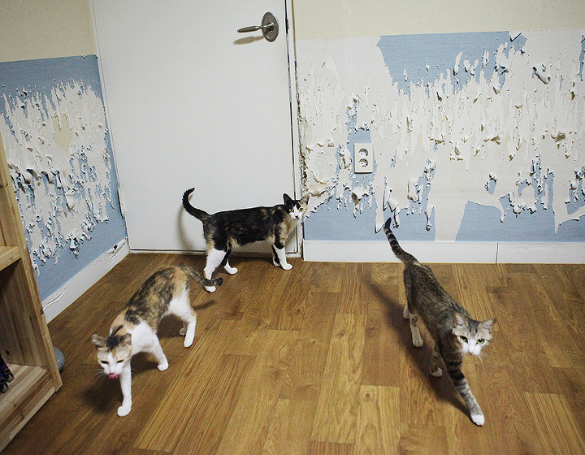
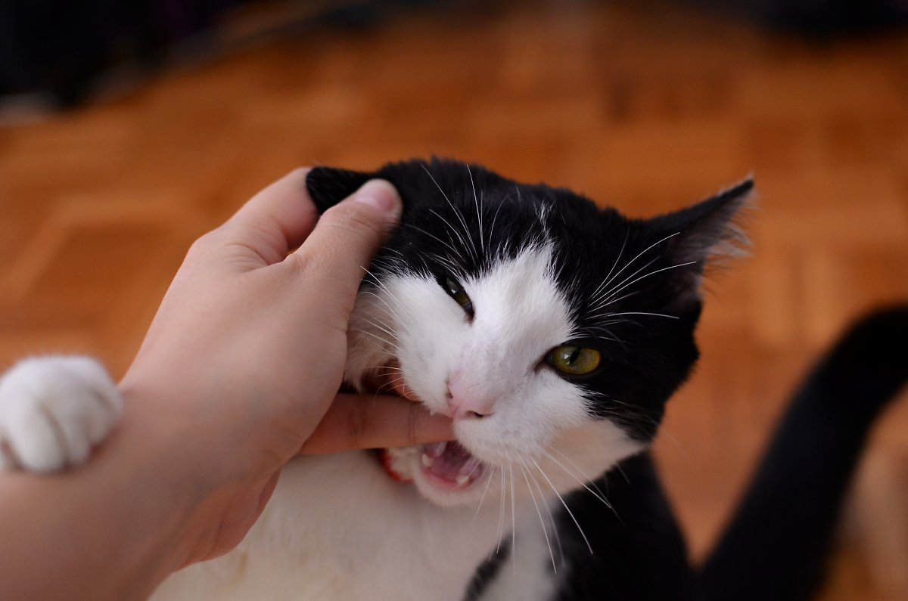
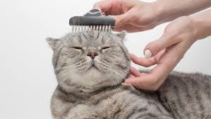

애완묘의 단점
장점이 여러가지가 있는 것처럼 단점 또한 여러가지가 있다.
스크래치와 이갈이
고양이는 길어지는 발톱과 이빨을 갈기위해 항상 손질한다. 그러기에 가죽 소파,벽지,장판 등 여러 가구들을 마구 긁어놔 온통 뜯어놓게 되는 대참사가 발생한다. 이를 조금이라도 막아주기 위해 주기적 발톱 깎기와 스크래처를 설치해주는 것이 방법이다.
주인에 대한 공격성
반려묘를 키우며 한번쯤은 무조건 긁히고 물리며 상처나게 되는 이유이다. 고양이가 싫어하는 행동을 하거나 장난을 치다가 깨물거나 긁는 경우가 있는데, 매우 아프다. 특히 장난을 칠때 고양이 입장에선 가벼운 장난이지만 그 강도는 그렇지 않은 경우가 있다. 특히나 새끼고양이 경우에는 힘조절이 안되기 떄문에 더욱 심하다.
엄청난 털날림
고양이 키우기의 가장 큰 애로사항이라 할 수 있다. 꾸준한 빗질로 90%를 예방할 수 있다지만 그 나머지 또한 엄청나게 빠지는 편이며, 또한 날린 털들은 옷들에 붙기에 더욱 큰 스트레스이다.